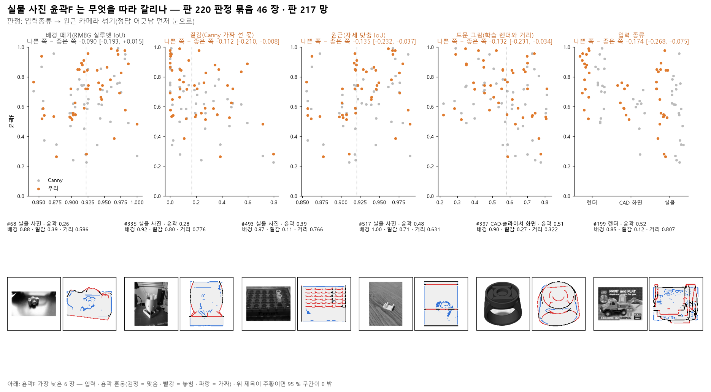

m1_tr0221_h000_실패종류
실물에서 윤곽을 놓치는 사진은 배경 떼기 · 질감 · 원근 · 렌더에 드문 그림 가운데 무엇을 따라 갈리나?
판정 · 입력종류(규칙) — 렌더 아님 −0.174 [−0.268, −0.075] · Canny 도 −0.176 · 원근 −0.135 · 드문그림 −0.132 · 질감 −0.112 구간 0 밖 · 배경떼기 −0.090 구간 걸침 → 원근 카메라 섞기(정답 어긋남 먼저 눈으로) · 눈으로: 윤곽 낮은 6 장 중 5 장 배경 안 떼짐(상자 채움 ≥ 0.97 · 132 중 20 · 판정 묶음 중 6) → 정답 엉뚱 · 6 장 빼도 tr220 「다」 그대로(윤곽 0.750 대 Canny 0.654) · 배경떼기 ~ 원근 상관 0.96(같은 것을 잼 · 제 실수)
결정 표(돌리기 전에 정함)
- 만약 질감 차가 다섯 가운데 가장 크고 95 % 구간이 0 밖
다음 학습 렌더를 실물답게(색 · 질감 · 조명 · 배경 무작위) 다시 학습하는 판 - 만약 드문그림 차가 가장 크고 구간이 0 밖(질감은 아님)
다음 생성기 모양 · 짜임 넓히기(구멍 줄 · 우리 · 결 같은 반복 구조) - 만약 배경떼기 차가 가장 크고 구간이 0 밖
다음 망 말고 앞단(배경 떼기) 고치기 판 - 만약 원근 또는 입력종류 차가 가장 크고 구간이 0 밖
다음 학습 렌더에 원근 카메라를 섞는 판(정답 쪽 어긋남인지 먼저 눈으로) - 만약 어느 요인도 구간이 0 밖이 아님
다음 윤곽F 낮은 10 장을 맥락 없는 서브 에이전트가 눈으로 분류
분석
한 줄로
물음: 실물에서 윤곽을 놓치는 사진은 배경 떼기 · 질감 · 원근 · 렌더에 드문 그림 가운데 무엇을 따라 갈리나?
답: 미리 정한 규칙으로는 「입력 종류」 다. 렌더가 아닌 사진이 윤곽 F 가 0.17 낮았고(구간 −0.27 ~ −0.08), 결정 표대로면 다음은 「원근 카메라 섞기, 단 정답 어긋남부터 눈으로」 다. 그런데 눈으로 보니 더 앞선 문제가 있었다. 윤곽이 가장 낮은 6 장 가운데 5 장은 배경이 아예 안 떼진 사진이었고, 그래서 정답 자체가 엉뚱했다. 시험지부터 고쳐야 한다.
왜 이 판을 했나
tr220 에서 렌더로 배운 망은 실물 윤곽이 0.71(렌더 0.95)이었고, 결정 표 「다」 가 나왔다. 「다」 의 다음 일은 실패한 사진을 종류별로 세는 것이다. 어디서 무너지는지 알아야 다음 판(실물다운 렌더 · 생성기 넓히기 · 앞단 고치기 · 원근 카메라) 가운데 하나를 고를 수 있다.
바꾼 것 하나
망은 다시 돌리지 않았다. tr220 의 사진별 기록에 요인 다섯을 붙여, 요인마다 46 장을 중앙값으로 반씩 나누고 윤곽 F 차를 쟀다. 요인은 미리 정했다: 배경 떼기(RMBG 실루엣과 정답 실루엣 IoU), 질감(Canny 선 가운데 정답 선 밖 몫), 원근(자세 맞춤 IoU), 드문 그림(학습 렌더 4,000 장과 DINOv2 거리), 입력 종류.
결과

| 판정 묶음 46 장 | 나쁜 쪽 − 좋은 쪽 윤곽 F | 95 % 구간 | 같은 나눔 Canny |
|---|---|---|---|
| 입력 종류(렌더 아님) | −0.17 | −0.27 ~ −0.08 | −0.18 |
| 원근(자세 맞춤 낮음) | −0.13 | −0.23 ~ −0.04 | −0.10 |
| 드문 그림(멀다) | −0.13 | −0.23 ~ −0.03 | −0.11 |
| 질감(많다) | −0.11 | −0.21 ~ −0.01 | −0.14 |
| 배경 떼기(낮음) | −0.09 | −0.19 ~ +0.02 | −0.06 |
차가 음수면 나쁜 쪽 사진에서 윤곽 F 가 그만큼 낮다는 뜻이다. 넷이 구간 0 밖이고 크기도 서로 겹친다.
왜 이렇게 나왔나
확인한 것
- 1 등인 입력 종류는 Canny 도 똑같이 떨어진다(−0.17 대 −0.18). 우리 망만의 약점이 아니라, 실물 사진이 어떤 방법에나 어렵거나 정답이 덜 맞는 쪽이다.
- 윤곽이 가장 낮은 6 장을 원본 사진 · 배경 떼기 · 정답과 나란히 놓고 봤다. #68 · #199 · #335 · #517 은 RMBG 가 배경을 하나도 안 떼서 사진 전체가 물체로 잡혔다. 그 네모에 정답 메시를 맞추니 정답이 엉뚱한 모양이 됐다(#517 은 작은 부품인데 정답은 판 전체). #493 은 쟁반이 사진을 꽉 채워 같은 꼴이다. 진짜 망 실패는 #397(반지 안쪽 윤곽 놓침) 하나다.
- 배경 떼기 마스크가 경계 상자를 97 % 넘게 채우는 사진은 132 장 가운데 20 장, 판정 묶음 46 장 가운데 6 장이다.
- 그 6 장을 빼도(사후 확인) tr220 판정은 그대로다: 윤곽 0.750 대 Canny 0.654(렌더 0.949 에 못 미침 → 「다」), 깊이 0.128 대 Depth Anything 0.109.
- 6 장을 뺀 40 장에서 요인 표를 다시 보면(사후 · 탐색) 드문 그림은 사라지고(−0.03 · 구간 0 걸침), 사진 실루엣이 정사영 정답과 덜 맞는 쪽(배경 떼기 · 원근)에서 우리만 더 떨어진다(우리 −0.12 ~ −0.13 대 Canny −0.05 ~ −0.09 · Canny 쪽은 구간 0 걸침).
- 드문 그림은 사진끼리 견줘서는 가릴 수 없다. 사진은 모두 학습 렌더에서 멀다(가장 가까운 사진도 0.22 · tr217 시험 렌더는 90 % 가 0.21 안).
짐작 (아직 확인 안 함)
- 깨끗한 40 장에서 우리만 더 떨어지는 「실루엣이 정사영과 덜 맞는 사진」 은 원근이 센 사진일 것이다. 학습은 정사영 렌더뿐이었다.
한계
- 제 실수 둘. (1) 배경 떼기와 원근 요인이 사실상 같은 것을 쟀다(순위 상관 0.96). 둘 다 「RMBG 마스크 대 자세 맞춘 정답 실루엣」 이다. (2) tr220 의 판정 묶음 거름(자세 IoU ≥ 0.85)이 배경 안 떼진 사진을 못 걸렀다. 자세를 같은 마스크에 맞췄으니 네모 마스크에 네모 정답이 맞아 IoU 가 높게 나온다.
- 46 장(깨끗한 것 40 장)이라 요인끼리 순위를 가릴 힘이 약하다. 요인끼리도 얽혀 있다(실물 사진이 질감도 많고 렌더에서도 멀다).
- 40 장 표와 6 장 빼기는 결과를 보고 한 사후 확인이다.
배운 것과 다음
실물 윤곽 실패의 맨 앞은 망이 아니라 시험지였다. 배경이 안 떼진 사진에 정답을 억지로 맞춰서, 무엇을 놓쳤는지 셀 수조차 없는 사진이 판정 묶음에 섞여 있었다.
- 시험지 고치기: 배경 떼기가 상자를 97 % 넘게 채운 20 장을 표시하고, 판정 묶음 거름에 넣는다(tr220 숫자는 그대로 · 다음 판부터).
- 결정 표 다음(원근 카메라 섞기)은 깨끗한 40 장에서도 같은 쪽을 가리킨다. 학습 렌더 일부를 원근 카메라로 다시 그려 학습하는 판(222)을 준비한다.
- 실물다운 렌더(색 · 질감 · 조명)는 질감 요인이 1 등이 아니어서 미룬다.
판 기록
- 카드 · 코드 커밋 8a12c6a(돌리기 전) · 판정 잼.json · 그림 그림.png · 사진별 요인 out/설명/캐드부품/모델221/요인_사진별.json · 상자채움.json(git 밖).